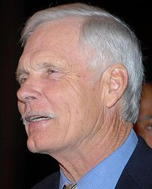

Robert Edward "Ted" Turner III (born November 19, 1938) is an American media
mogul and philanthropist. As a businessman, he is known as founder of the Cable
News Network (CNN), the first 24-hour cable news channel. In addition, he
founded WTBS, which pioneered the superstation concept in cable television.
As a philanthropist, he is known for his US$1 billion gift to support the United
Nations, which created the United Nations Foundation, a public charity to
broaden domestic support for the UN. Turner serves as Chairman of the United
Nations Foundation board of directors. Additionally, in 2001, Turner co-founded
the Nuclear Threat Initiative with U.S. Senator Sam Nunn (D-GA). NTI is a
non-partisan organisation dedicated to reducing global reliance on, and
preventing the proliferation of, nuclear, chemical, and biological weapons. He
currently serves as Co-Chairman on the Board of Directors.
Turner's media empire began with his father's billboard business, Turner Outdoor
Advertising, which he took over in 1963 after his father's suicide.It was worth
$1 million. His purchase of an Atlanta UHF station in 1970 began the Turner
Broadcasting System. CNN revolutionized news media, covering the Space Shuttle
Challenger disaster in 1986 and the Persian Gulf War in 1991.
Turner turned the
Atlanta Braves baseball team into a nationally popular franchise and launched
the charitable Goodwill Games. He helped revive interest in professional
wrestling by buying World Championship Wrestling (WCW) and starting the Monday
Night Wars in 1995, airing Monday Nitro on his TNT head-to-head against the
World Wrestling Federation's Monday Night Raw on USA.
Turner's penchant for controversial statements earned him the nicknames "The
Mouth of the South" and "Captain Outrageous". Turner has also devoted his assets
to environmental causes. He was the largest private landowner in the United
States until John C. Malone surpassed him in 2011.
He uses much of his land for
ranches to re-popularize bison meat (for his Ted's Montana Grill chain),
amassing the largest herd in the world. He also created the environmental-themed
animated series Captain Planet and the Planeteers